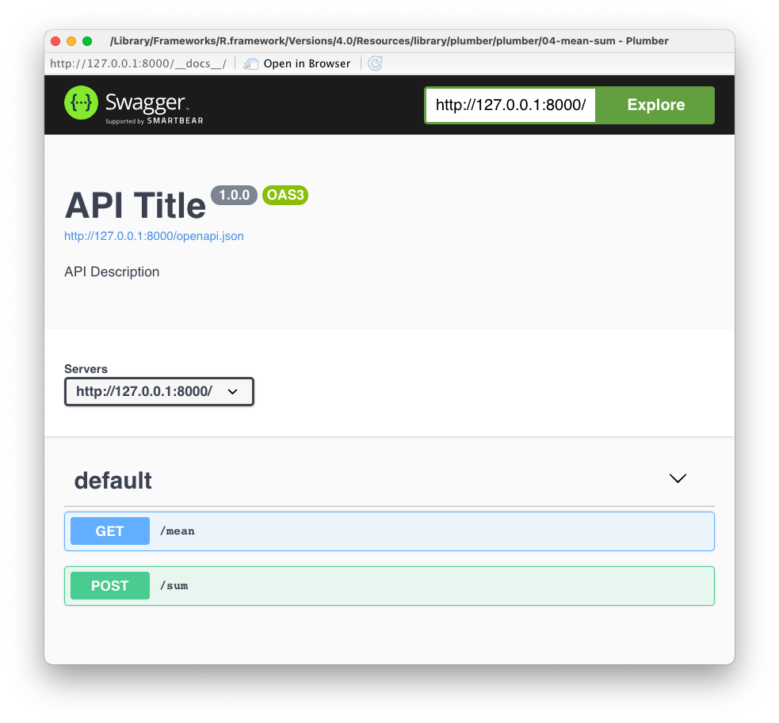

2021-03-29
I am happy to announce that {plumber} v1.1.0 is now on CRAN! Install it with:
install.packages("plumber")By the way, {plumber} v1.0.0 was released about 6 months ago, but we didn’t make a full announcement, so here we’ll highlight features and improvements in both v1.0.0 and v1.1.0. At a high level, this includes:
In addition to the new features, {plumber} now has an official RStudio cheat sheet, a new hex logo, and uses {pkgdown} to construct its website https://www.rplumber.io/.
{plumber} now has the ability to execute endpoints asynchronously via the {promises} and {future} packages. By wrapping slow endpoint code in promises::future_promise(), the main R session is able to execute multiple concurrent requests much more efficiently (compared to regular execution). For example, suppose we have the plumber API with endpoints:
#* @get /slow/<k>
function() {
promises::future_promise({
slow_calc()
})
}
#* @get /fast/<k>
function() {
fast_calc()
}Now let’s imagine a scenario where 6 /slow/<k> requests are received before a /fast/<k> request. Since the slow_calc() has been wrapped in promises::future_promise(), the fast_calc() is able to execute immediately, even when limited {future} workers are available. The figure below depicts a timeline of what happens in this scenario when 2 {future} workers are available. Note that without async execution, the /fast/<k> would take 60 seconds to complete, but with promises::future_promise() it completes almost immediately! 🎉
future_promise() allows the main R session to be free while waiting for a future worker to become availableSee the article on promises::future_promise() to learn more.
A brand new tidy interface to create plumber API’s with a more natural, pipe-able, functional programming approach:
# Initialize
pr() %>%
# Add a route
pr_get("/echo", function(msg = "(not provided)") {
list(msg = msg)
}) %>%
# Run the API
pr_run(port = 8000)#* @plumber tagWhen plumb()ing a file, there are only a limited set of tags that {plumber} knows how to handle. To avoid having to create an ./endpoint.R file, you can access your {plumber} API when plumb()ing your file by using the @plumber tag.
The @plumber tag will immediately execute the function definition right after the tag.
In the example below, we show how you can mount another API using the @plumber tag in addition to defining a regular GET route to /echo. Mounting a router (and many other API alterations) is not possible when plumb()ing a file unless you use the #* @plumber tag.
#* @get /echo
function(msg = "(not provided)") {
list(msg = msg)
}
#* @plumber
function(pr) {
mnt <- plumb("plumber_mount.R")
pr %>%
pr_mount("/mount_path/", mnt)
}pr() %>%
pr_get("/echo", function(msg = "(not provided)") {
list(msg = msg)
}) %>%
pr_mount("/mount_path/", plumb("plumber_mount.R"))Prior to {plumber} v1.0.0, {plumber} had a very limited set of body parsers (JSON and form), but we’ve added numerous parsers including: text, octet-stream, multipart forms, CSV, TSV, RDS, YAML, Feather, and more.
No additional effort is required to use the JSON, form, text, octet-stream, and multipart form body parsers; however, if you’d like to use any of the other parsers, you’ll want to know about the new #* @parser tag. Be aware that when adding this tag to an endpoint, it’ll overwrite the default set of body parsers. So, for example, if you only want support for parsing TSV information, then do:
#* @parser tsv
#* @post /tsv_to_json
function(req, res) {
req$body
}pr() %>%
pr_post(
"/tsv_to_json",
function(req, res) { req$body },
parsers = "tsv"
)Like the request body parsers, a whole new set of response serializers have been added. These include CSV, TSV, RDS, Feather, YAML, format() output, print() output, cat() output. To change the default serializer from JSON, add a single #* @serializer tag to your route definition since unlike body parsers, an endpoint can only have one serializer.
In the example below, the CSV serialize is used and the extra arguments are passed along using the list(na = "")
#* @get /mtcars.csv
#* @serializer csv list(na = "")
function() {
mtcars
}pr() %>%
pr_get(
"/data",
function() {
as_attachment(mtcars, "custom.csv")
},
serializer = plumber::serializer_csv(na = "")
)If a user visited the endpoint in the previous section (/mtcars.csv) using their web browser, their browser would download mtcars.csv. In order to customize the downloaded filename, use the new as_attachment(). This allows you to decouple the named of the endpoint (e.g., /data) with the downloaded filename (custom.csv).
# Download the response as a file named `custom.csv`
#' @get /data
#' @serializer csv
function() {
as_attachment(mtcars, "custom.csv")
}pr() %>%
pr_get(
"/data",
function() {
as_attachment(mtcars, "custom.csv")
},
serializer = plumber::serializer_csv()
)With {plumber} v1.0.0, we upgraded the API specification to follow OpenAPI v3. Upgraded the visual documentation to be based on OpenAPI v3. Before v1.0.0, {plumber} used Swagger 2.0 specification. Since then, Swagger 2.0 spec was rebranded to OpenAPI Specification v2 and has upgraded to v3.
When running a {plumber} API interactively, you will see visual documentation similar to the screenshot below:
plumb_api("plumber", "04-mean-sum") %>% pr_run(port = 8000)
We’ve implemented a highly requested behavior where requests that do not end in a slash will redirect to the route with a final slash.
For example, let’s pretend that the route GET /example does not exist on our API, but GET /example/ does exist. If the API receives any request for GET /example?a=1, {plumber} will respond with a redirect to GET /example/?a=1.
The implementation details may change in a later release (such as internally redirecting to avoid a second request), but the intent of eventually executing the slashed route will remain.
To opt into this behavior, set the option options_plumber(trailingSlash = TRUE). The current default behavior is options_plumber(trailingSlash = FALSE). This default behavior will most likely change to TRUE with the next major release of {plumber}.
For advanced {plumber} developers, {plumber} provides tools to register your own request body parser (register_parser()), response serializer (register_serializer()), and custom visual documentation of the {plumber} API. Visual documentation can be customized in two ways: register_docs() which allows you to easily get different UI styling (via packages such as {rapidoc}) and pr_set_api_spec() which allow customization of the OpenAPI specification. To do the latter, provide either YAML or JSON (that conforms to the OAS) to pr_set_api_spec().
If you ever want to pose a general question or have a question about your {plumber} setup, post a question on using the
{plumber} tag.
Many new features of {plumber} have come from community questions. Please keep them coming!
For more details on {plumber}’s recent releases (including bug fixes and other enhancements), please see the full Changelog.
Happy plumb()ing!